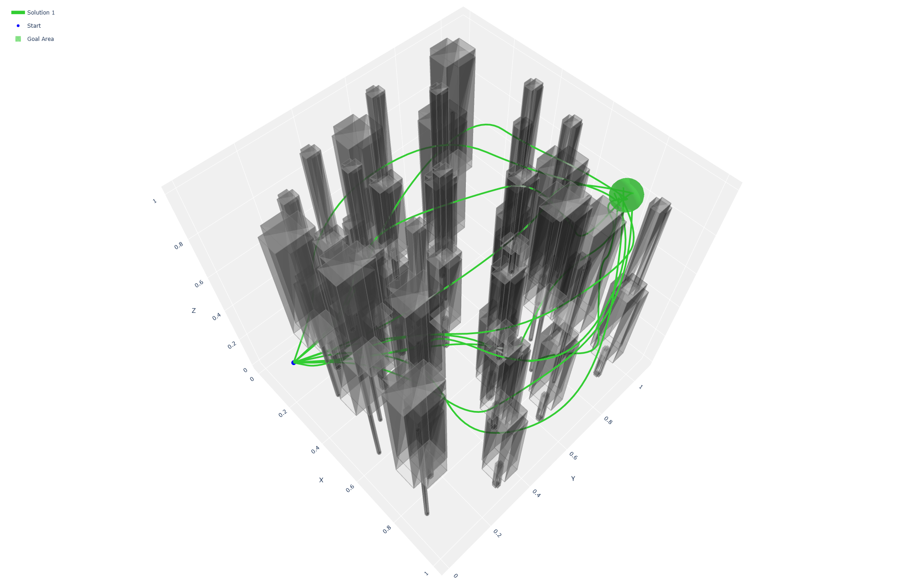
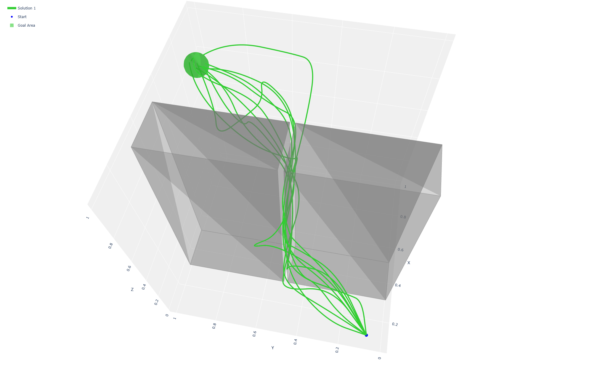
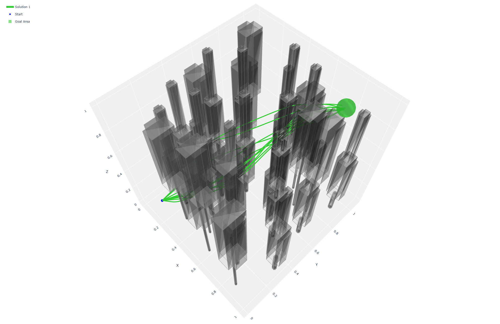
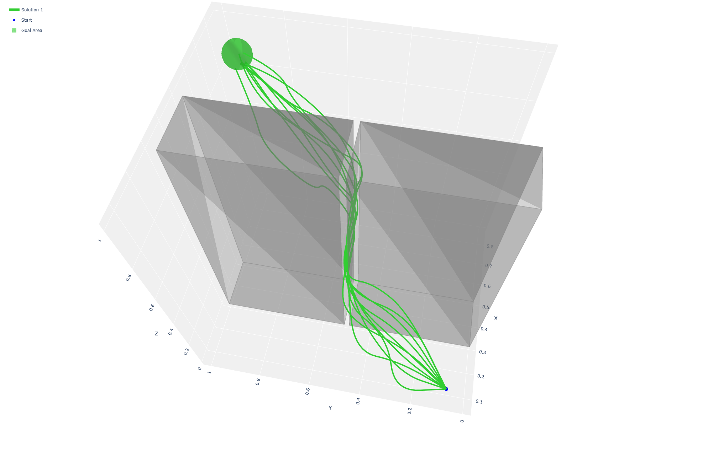
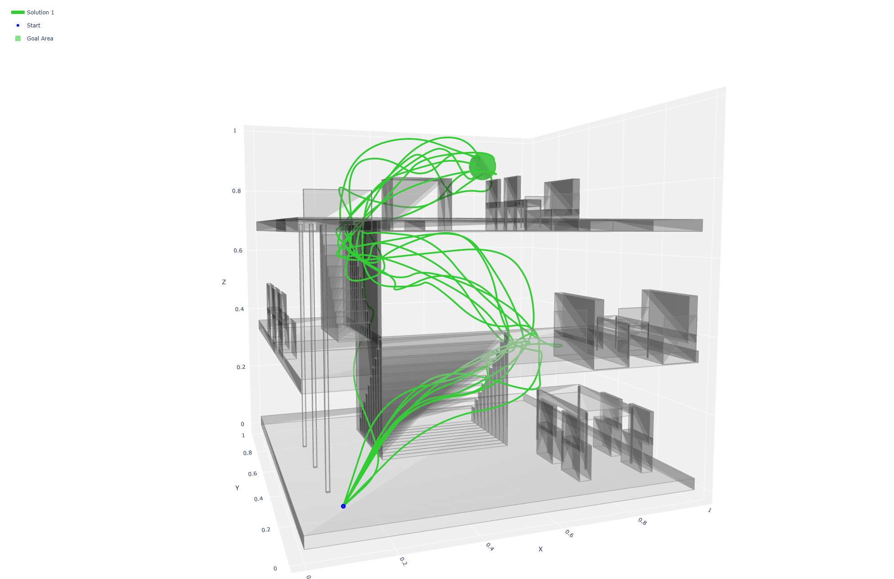
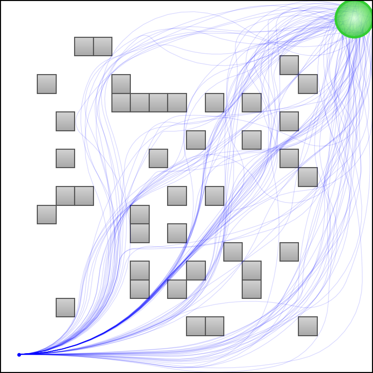
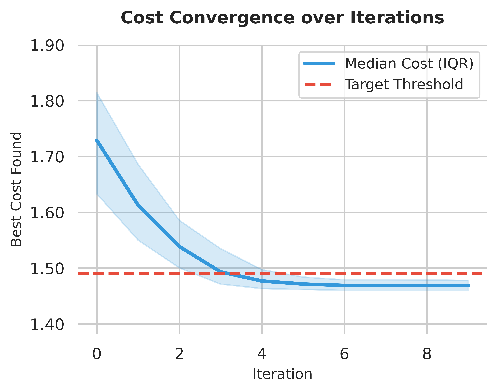
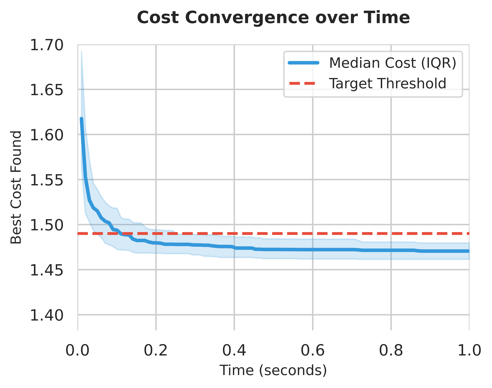

Sampling-based motion planners have been shown to be effective for systems with complex kinodynamic constraints and high dimensionality. However, these algorithms struggle to achieve real-time performance, leading to recent efforts to parallelize planning. While GPU-accelerated planners have achieved significant speedups, existing approaches require specialized CUDA programming that limits accessibility and portability.
We present Parallel Asymptotically Optimal Kinodynamic RRT (PAKR), a massively parallel kinodynamic planner leveraging JAX and the XLA compiler to achieve GPU acceleration through standard Python tooling. By combining our parallel planner with the AO-x meta-algorithm, we achieve asymptotic optimality through fast iterative replanning.
We provide a theoretical analysis of probabilistic completeness, analyze the effects of batch size and branching factor on convergence, and demonstrate scalability to complex dynamics using the MuJoCo-XLA simulator. Experiments show competitive runtimes with state-of-the-art GPU planners and superior solution quality.
Utilizing the Python-JAX jit compiler, we compile the RRT planner into a single GPU kernel, minimizing device transfer overhead. The planner performs node selection, action sampling, forward simulation, and tree building in large batches, enabling efficient parallelism. With a fast single-solve time, we can iteratively replan with decreasing cost thresholds to achieve asymptotic optimality at high frequencies.
These environments were taking from KinoPAX, a CUDA implementation of accelerated kinodynamic planning. Three dynamics models are used: 6d double integrator, 6d dubins airplane, and 12d quadrotor.

(a) Initial Tree

(b) Initial Narrow
(c) Initial House

(d) Final Tree

(e) Final Narrow

(f) Final House
Depiction of 10 initial and final solution trajectories (green lines) and 3d obstacle environments for PAKR, run with the double integrator model. The start and goal regions are represented by the blue and green spheres. Cost criterion is set to distance traveled to better visualize convergence.
To compare against optimal planners, we also evaluate against DynoBench's iDb-A* and SST* implementations. Four dynamics models are used: 3d unicycle with velocity control, 5d unicycle with acceleration control, 4d acrobot, and 12d quadrotor.

4d acrobot problem visualized in mujoco.
We also run our planner with the MuJoCo-XLA simulator, which provides GPU-accelerated physics simulation for complex dynamics. With MJX, we solve a 4d cartpole problem and a 10d block push problem. In addition, we use a soft growing vine simulator to demonstrate the ability of PAKR to handle complex, high-dimensional dynamics.
10d blockpush problem. Left has an easier start position.
Soft growing vine planning problem
We evaluate the performance of PAKR against KinoPAX, a gpu-accelerated planner, and two optimal planners: iDb-A* and SST*. We also analyze the convergence behavior of PAKR with respect to iterations and time, demonstrating its ability to find high-quality solutions efficiently.


| Env A | Env B | Env C | |||||
|---|---|---|---|---|---|---|---|
| Dynamics | Planner | Time | Nodes | Time | Nodes | Time | Nodes |
| 6D DI | KinoPAX | 5.0ms | 164k | 3.5ms | 144k | 6.3ms | 193k |
| PAKR | 2.5ms | 9k | 1.8ms | 21k | 5.5ms | 19k | |
| 6D DA | KinoPAX | 4.4ms | 63k | 3.7ms | 72k | 7.6ms | 107k |
| PAKR | 5.4ms | 19k | 5.9ms | 32k | 14.9ms | 57k | |
| 12D QC | KinoPAX | 17.8ms | 285k | 17.8ms | 285k | 24.6ms | 333k |
| PAKR | 14.9ms | 71k | 17.1ms | 147k | 51.4ms | 173k | |
| Environment A | Environment B | Environment C | ||||||||||
|---|---|---|---|---|---|---|---|---|---|---|---|---|
| Dynamics | Time1 | Cost1 | Timef | Costf | Time1 | Cost1 | Timef | Costf | Time1 | Cost1 | Timef | Costf |
| 6D DI | 2.3ms | 1.76 | 28.0ms | 1.51 | 1.8ms | 2.03 | 20.0ms | 1.54 | 4.9ms | 3.11 | 45.0ms | 2.33 |
| 6D DA | 4.8ms | 1.71 | 22.0ms | 1.56 | 5.9ms | 1.69 | 6.0ms | 1.66 | 14.8ms | 3.42 | 32.0ms | 2.98 |
| 12D QC | 13.1ms | 2.16 | 20.1ms | 1.98 | 17.1ms | 2.42 | 31.0ms | 2.11 | 55.6ms | 3.98 | 165.4ms | 3.62 |
| Problem | Alg. | SR% | Time1 | Cost1 | Costf |
|---|---|---|---|---|---|
| Unicycle 1 | iDb-A* | 100 | 254ms | 5.80s | 5.10s |
| SST* | 100 | 600ms | 8.34s | 4.41s | |
| PAKR | 100 | 1.3ms | 4.62s | 4.46s | |
| Unicycle 2 | iDb-A* | 12 | 4637ms | 8.70s | 8.70s |
| SST* | 100 | 398ms | 14.15s | 6.95s | |
| PAKR | 100 | 1.4ms | 5.40s | 4.75s | |
| Acrobot | iDb-A* | 100 | 1450ms | 5.24s | 4.96s |
| SST* | 74 | 3298ms | 4.36s | 3.39s | |
| PAKR | 100 | 13ms | 3.87s | 3.22s | |
| Quadcopter | iDb-A* | 100 | 1387ms | 2.56s | 2.21s |
| SST* | 41 | 85457ms | 9.64s | 9.42s | |
| PAKR | 100 | 175ms | 7.54s | 6.23s |
| Branching Factor (A) | |||||
|---|---|---|---|---|---|
| Batch | Metric | 2 | 16 | 64 | 128 |
| 4k | Success (%) | 100.0 | 100.0 | 99.0 | 94.0 |
| Time (ms) | 19.5 | 16.1 | 26.7 | 41.9 | |
| Iters | 22.0 | 36.0 | 69.0 | 104.0 | |
| Nodes | 37.6k | 57.7k | 107.5k | 168.1k | |
| 8k | Success (%) | 100.0 | 100.0 | 97.0 | 93.0 |
| Time (ms) | 24.5 | 13.1 | 19.0 | 26.7 | |
| Iters | 15.0 | 21.0 | 39.0 | 57.0 | |
| Nodes | 54.3k | 70.9k | 124.9k | 181.9k | |
| 16k | Success (%) | 100.0 | 100.0 | 97.0 | 87.0 |
| Time (ms) | 47.2 | 14.3 | 17.1 | 14.3 | |
| Iters | 12.0 | 14.0 | 25.0 | 25.0 | |
| Nodes | 89.9k | 103.8k | 162.7k | 163.3k | |
| 32k | Success (%) | 100.0 | 100.0 | 99.0 | 86.0 |
| Time (ms) | 115.3 | 26.9 | 20.1 | 19.9 | |
| Iters | 10.0 | 12.0 | 17.0 | 20.0 | |
| Nodes | 154.6k | 175.5k | 232.3k | 277.0k | |
@misc{gao2026fastasymptoticallyoptimalkinodynamic,
title={Fast Asymptotically Optimal Kinodynamic Planning via Vectorization},
author={Yitian Gao and Andrew Lu and Zachary Kingston},
year={2026},
eprint={2607.03987},
archivePrefix={arXiv},
primaryClass={cs.RO},
url={https://arxiv.org/abs/2607.03987},
}